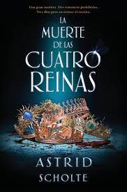
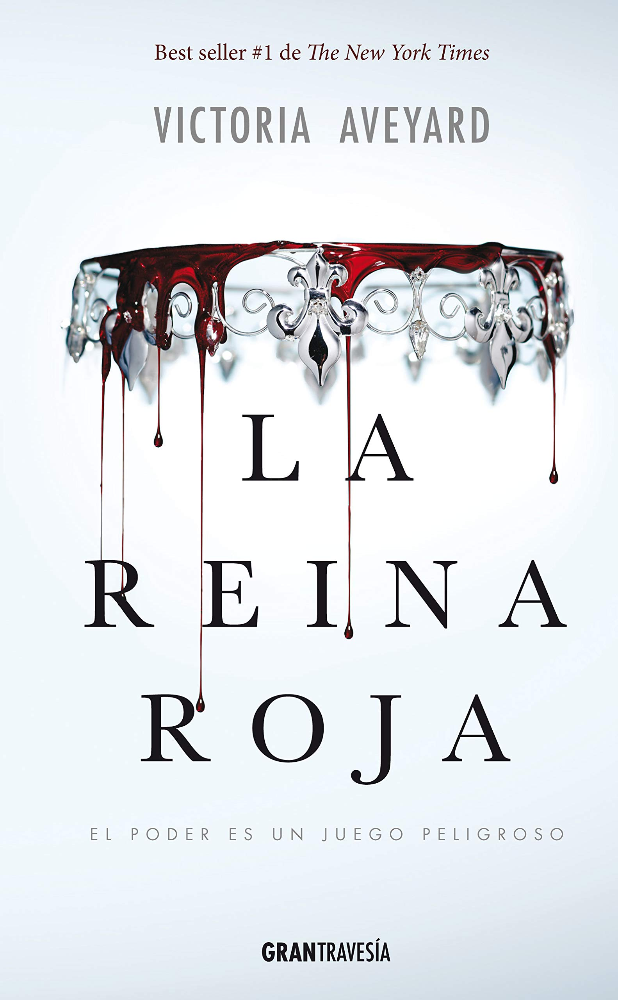
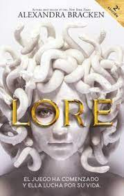
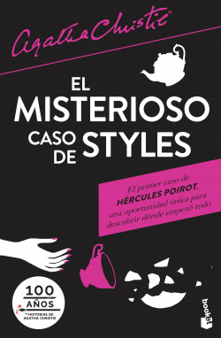
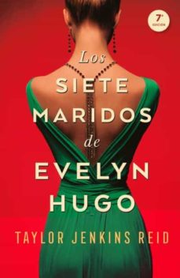

1. La Muerte de las Cuatro Reinas

Iris abrió sus ojos verdes y observó el cielo azul brillante. Estaba disfrutando del respiro qe se había dado del eterno palacio dorado. Cómo cúpla de cristal rodeaba el palacio, tanto en cada habitación como en el interior se reflejaba un tono dorado. Incluso por la noche, los pasillos adquirían un color ámbar oscuro, como si la oscuridad no se atreviese a rozar a las reinas con sus dedos negros...
Una abeja le picó la garganta. Una picadura fuerte que dio paso a un ligero dolor...
La picadura de la abeja le empezó a doler más, hasta que a Iris le fue imposible respirar. La garganta se le llenó de saliva. ¿Era alérgica?
Acercó una mano a la picadura y encontró una rugosidad enorme en la piel. Al apartar la amno la encontró llena de sangre. Algunos balbuceos escaparon de sus labios.
Una persona se cernió sobre ella, mostrando una dentadura brillante en señal de amenaza y regocijo. Un rayo de sol se reflejó en un cuchillo delgado que goteaba sangre.
Iris sintió una punzada de ira cuando la sangre caliente empezó a salir en borbotones de su cuello. Agitó los brazos hacia atrás y tiró la corona al suelo.
"¡Esto es un ultraje!¡Soy la reina de Arquia!¿Cómo se atreven a cortarme el cu...?"
Sus personajes son una obra de arte y, a pesar de que tenía mis dudas, el que esté narrado desde el punto de vista de múltiples personajes enriquece muchísimo la historia y nos permite conocer y encariñarnos con todos los personajes.
Durante toda la novela estaba entre la espada y la pared, entre dos sentimientos encontrados: el querer terminarlo para poder descubrir TODO y el querer que dure para siempre. Me acuuerdo de leer a "todo motor" y al mismo tiempo obligarme a parar al terminar los capítulos para que no se me acabara tan rápido.
2. La Reina Roja
Está súper entretenido y te engancha desde la primera página, aunque mi favorito por lejos es el tercero.
Lamentablemente no escribí una reseña en su momento, pero si realicé una reseña bastante completa sobre "La Jaula del Rey" (el tercero de la saga) en videos. Si quieren ver el primero de estos videos sobre el libro pueden ir haciendo clic aquí.
3. Lore
Hace mucho tiempo, Lore Perseus huyó de esa competición brutal a raíz del sádico asesinato de su familia por parte de un linaje rival, y dejó atrás las promesas de la caza de la gloria eterna. Durante años ha intentado evadir cualquier pensamiento de venganza hacia el hombre-ahora un dios- responsable de la muerte de su familia. Sin embargo, durante el último agón en Nueva York, dos participantes le piden ayuda: Cástor, su amigo de la infancia, a quien creía muerto, y Atenea, una de las últimas diosas originales, gravemente herida.
La diosa le ofrece una alianza contra su enemigo común y, además, una forma de que Lore pueda dejar el agón en el pasado para siempre. Pero la decisión de Lore de vincular su destino al de Atenea y volver a unirse a la caza tendrá un coste mortal, y puede que no sea suficiente para detener la aparición de un nuevo dios con el poder de poner a la humanidad de rodillas.
En menos de 535 el panorama cambia tantas veces que se mantiene el dinamismo y la magia.
Si les gusta la mitología con una vuelta de tuerca y la intriga este es el libro para ustedes. Les juro que no se van a arrepentir.
ALERTA SPOILERS!!
Acabo de terminarlo y siento un vacío en el alma, este libro se robó un pedazo de mi ser: me dejó entre la alegría y la satisfacción por todo lo ganado y la tristeza por todas las pérdidas (principalmente por no ser capaz de leerlo de nuevo como si fuera la primera vez).
Para empezar voy a hablar de mi personaje favorito: Atenea. Siento que fue uno de los mejores personajes de todo el libro. Es la diosa de la sabiduría, una estratega, capaz de hacer tanto la guerra como la paz y dispuesta a hacer todo lo que esté a su alcance para lograr su cometido. Pero también podemos apreciar que no es un ente sin sentimientos ni humanidad. Por el contrario, descubrimos todo lo que pesa en su alma, todo lo que siente: esa búsqueda desenfrenada por la Égida que la lleva a matar a personas inocentes no tiene por objetivo lograr obtener su poder ni usarla para ganar el agón, sino que la quiere por lo que representa: es la prueba material del amor de su padre, Zeus, que demuestra cuando la quería, cuán orgulloso se encontraba de ella y, justamente, es eso lo que quiere: recuperar esa sensación y volver con su padre, volver a casa. Además, Atenea quiere volver a desempeñar su labor: guiar a las mentes sabias y a los héroes y defender ciudades y podemos ver cómo lo hace cuando salva a las personas de los escombros en el ataque de Belen o cuando da su vida para que Lore pueda defender la ciudad. También vemos la gran herida que le generó la muerte de Palas bajo su mano, por lo cual, cambió su nombre a Palas Atenea y no guió a ninguna mujer en su búsqueda del kleos. Y último pero no menos importante, su razón para transformar a Medusa: protegerla.
Cuando leí la muerte de Atenea fue terrible y me entró una rabia inmensa hacia la autora por haberla matado, por acabar con su vida a tan solo 20 páginas del final, pero este resultó ser el final ideal para la diosa de los ojos grises porque le permitió ascender y, cómo yo quiero creer, recuperar el orgullo y amor de su padre para volver finalmente a su lado, todo lo que ella quería y todo por lo que luchaba. Volvió a su esencia: dio su vida por salvar a la ciudad, murió haciendo aquello para lo que nació y fue recompensada.
Otro personaje que destaco es Lore, quien, al igual que Atlas, lleva una enorme carga sobre sus hombros: la culpa por la muerte de su familia. Me gustó mucho su historia y todo lo que vivió: crecer en un linaje casi extinto, tener que ver a sus padres con miedo y rogando, la muerte de su familia, la vida con Gil (GIL/HERMES TE AMO) y todos sus sacrificios: cómo está dispuesta a morir por los que ama y defender lo que cree correcto. Es un alma pura, honesta, valiente, amable, con sus aciertos y errores pero siempre bien intencionada, intentando hacer lo mejor para todos, incluso si eso implica su muerte.
Por último, ese final!!! Dios! Creo que fue el mejor que pudo haber tenido porque todos los que importan obtuvieron su final feliz, aquello que su alma verdaderamente anhelaba, y el agón llegó a su fin.
“La pluma que se desprende de un ala no está perdida, es libre” Gil/ Hermes
4. El Misterioso Caso de Styles
Por favor háganse un favor y lean este libro, no se van a arrepentir!!
Es una locura, nunca me hubiera esperado ese final, me quedé atónita y me sentí una idiota por no haberlo visto venir. Las últimas 30 páginas me las leí a tal velocidad que mis ojos no podían más, necesitaba saber la verdad más que al aire que respiro, así de bueno es.
Estuve toda la novela intentando descubrir quién era el asesino y después de pasar por MUCHOS sospechosos no lo pude descifrar. Al menos me quedo con la satisfacción de haber acertado en algunas pequeñas cosas (es un buen punto de partida para seguir los pasos de nuestro amigo Hércules Poirot), aunque también debo admitir que generé teorías que no podían estar más alejadas de la verdad.
Debo decir que al comienzo pensé que no me iba a gustar, cómo me pasó con El Tren de las 4:50, pero me lo terminé leyendo en un día de lo fascinada que estaba.
Agatha, tomá, se te cayó esto 👑, porque sí, sos la reina de este género. Todavía me impresiona que alguien tenga una inteligencia tal para crear semejante historia y lograr que todo cierre a la perfección y a la vez uno no se entere de nada hasta el final. Además, es impresionante la cantidad de giros de la trama, pero están tan perfectamente ejecutados que se merece todos los premios habidos y por haber.
5. Los Siete Maridos de Evelyn Hugo
Monique no está precisamente en su mejor momento. Su marido la abandonó y su vida profesional no avanza. Aun ignorando por qué Evelyn la ha elegido para escribir su biografía, Monique está decidida a aprovechar esa oportunidad para dar impulso a su carrera.
Convocada en el lujoso apartamento de Evelyn, Monique escucha fascinada mientras la actriz le cuenta su historia. Desde su llegada a Los Ángeles en los años 50 hasta su decisión de abandonar su carera en el espéctaculo en los 80 -y, desde luego, los siete maridos que tuvo en ese tiempo-. Evelyn narra una historia de ambición implacable, amistad inesperada, y un gran amor prohibido.
Monique empieza a sentir una conexión muy real con la actriz legendaria, pero cuandoel relato de Evelyn se acerca a su fin, resulta evidente que su vida se cruza con la de Monique de un modo trágico e irreversible.
Sentí tanto con este libro que me siento incapaz de volver a sentir algo de nuevo.
ALERTA SPOILERS!!
CUIDADO
No puedo creer todo el sufrimiento y la pérdida que tuvo que soportar. Ver morir a Harry, a Celia y a su hija, la muerte de su madre, las personas que más amó en su vida.
Me parte el alma que no haya podido disfrutar más tiempo de Celia, de su amor por Celia, y no sólo por su muerte, sino que por haberse separado a pesar de amarse con locura.
Que haya perdido a su mejor amigo, la persona que la quiso y a la que quiso incondicionalmente toda su vida, su alma gemela, porque sí, las almas gemelas no tienen porque ser una pareja. Ellos eran la familia del otro, personas destinadas a estar juntas y no todos tienen la suerte de encontrar algo así en su vida.
La muerte de su hija que era lo más importante y valioso, por quien hubiera hecho lo que fuera y renunciado a todo sin pensarlodos veces. Su bebé, su mayor orgullo y su razón de existir.
Solo espero que exista un más allá, aunque sea en este libro, donde Evelyn pueda encontrarse con todos los amores de su vida y ser feliz eternamente.